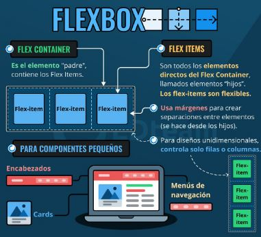

Flex Box
También es conocido como Modelo Flexible y nos va a servir para que una página pueda trabajar con diferentes dispositivos ya que al cambiar las dimensiones y hasta su orientación, nos va a permitir acomodar los diferentes elementos. A esto vamos a llamar diseño adaptativo. Lo que busca es cambiar el orden de los elementos sin importar el orden del código HTML. Para esto la lógica que utiliza este modelo o estandar es rellenar los espacios que quedan libres para esto se manejaran dos conceptos importantes que son:
- flex container
- flex item
Recio García, J. A. (2016). HTML5, CSS3 y JQuery: curso práctico. RA-MA Editorial. (Pág. 118-127)
